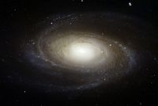
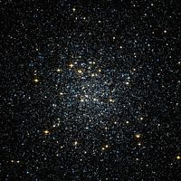

-
M80
Globular Cluster in Scorpius
- 
M81 (Bode's Galaxy)
Spiral Galaxy in Ursa Major
-
M82 (Cigar Galaxy)
Starburst Galaxy in Ursa Major
-
M83 (Southern Pinwheel Galaxy)
Barred Spiral Galaxy in Hydra
-
M84
Lenticular Galaxy in Virgo
-
M85
Lenticular Galaxy in Coma Berenices
-
M86
Lenticular Galaxy in Virgo
-
M87
Elliptical Galaxy in Virgo
-
M88
Spiral Galaxy in Coma Berenices
-
M89
Elliptical Galaxy in Virgo
-
M90
Spiral Galaxy in Virgo
-

M91
Barred Spiral Galaxy in Coma Berenices
- 
M92
Globular Cluster in Hercules
-
M93
Open Cluster in Puppis
-
M94
Spiral Galaxy in Canes Venatici
-
M95
Barred Spiral Galaxy in Leo
-
M96
Spiral Galaxy in Leo
-
M97
The Owl Nebula
-
M98
Spiral Galaxy in Coma Berenices
-
M99
Spiral Galaxy in Coma Berenices